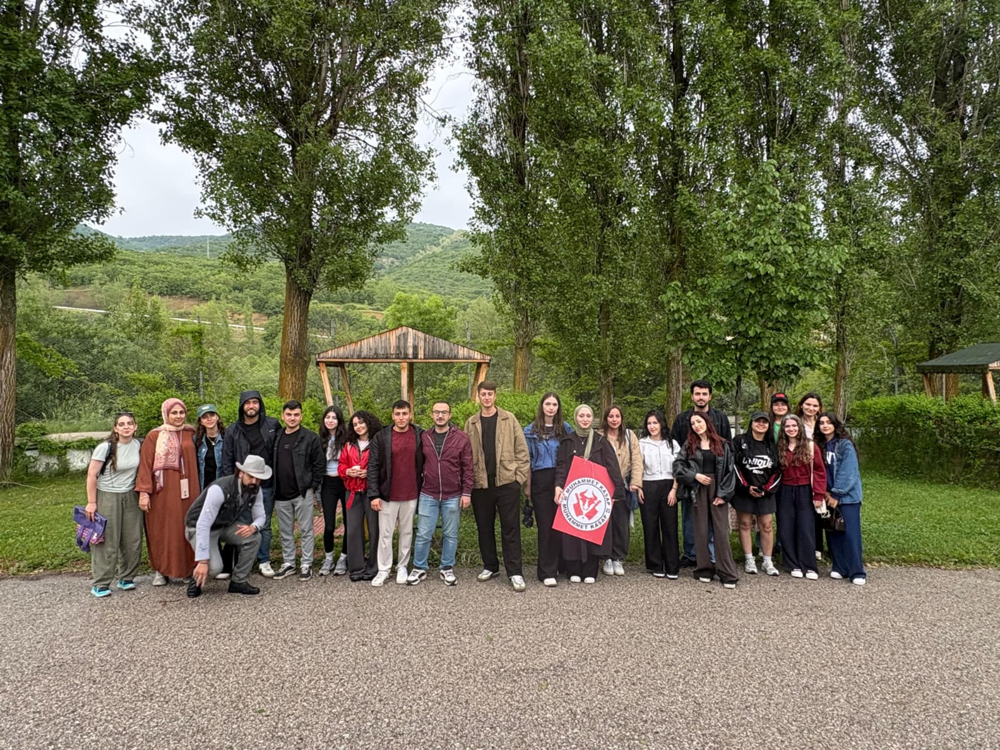
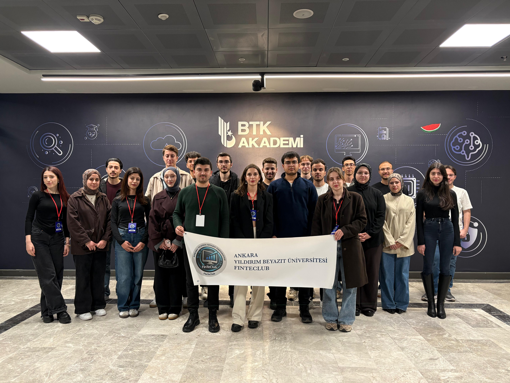
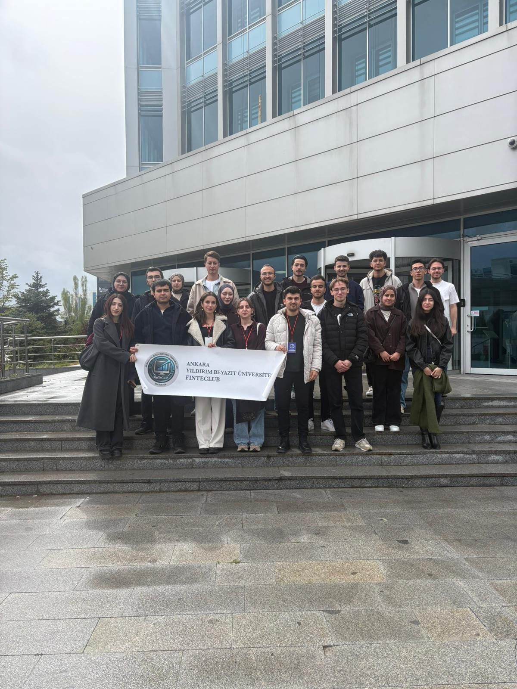
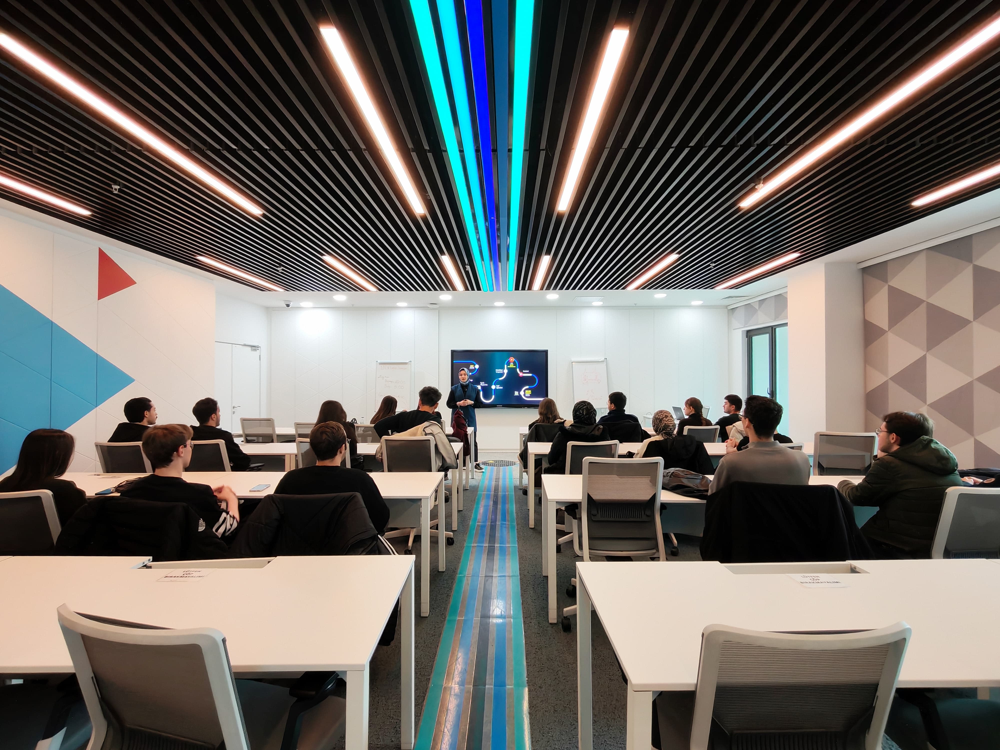
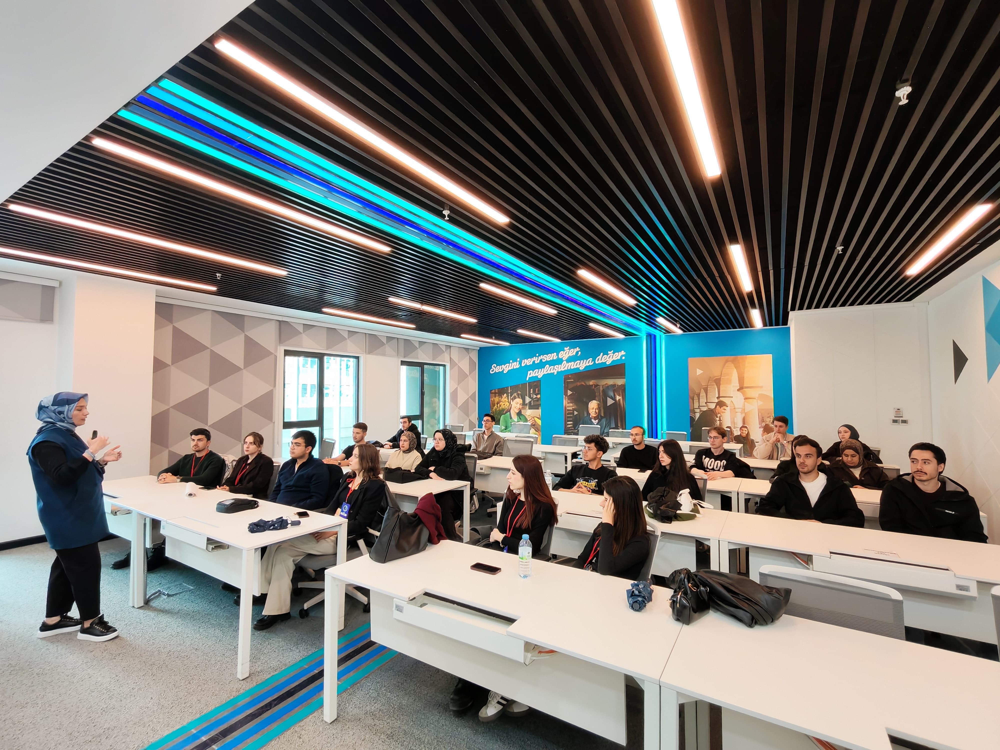
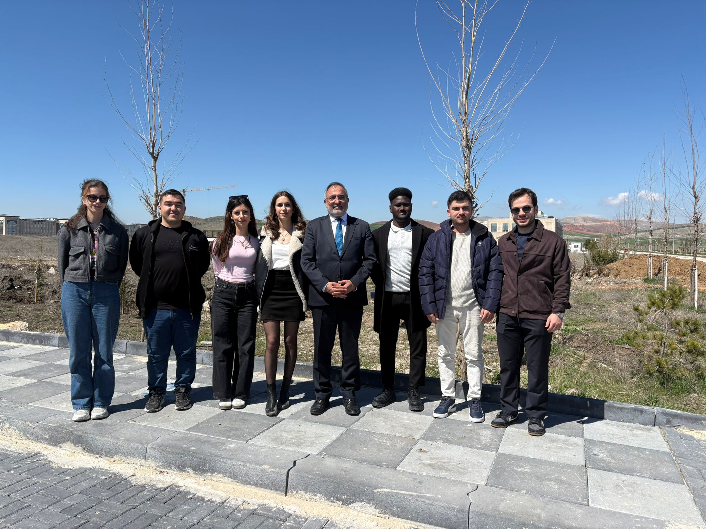
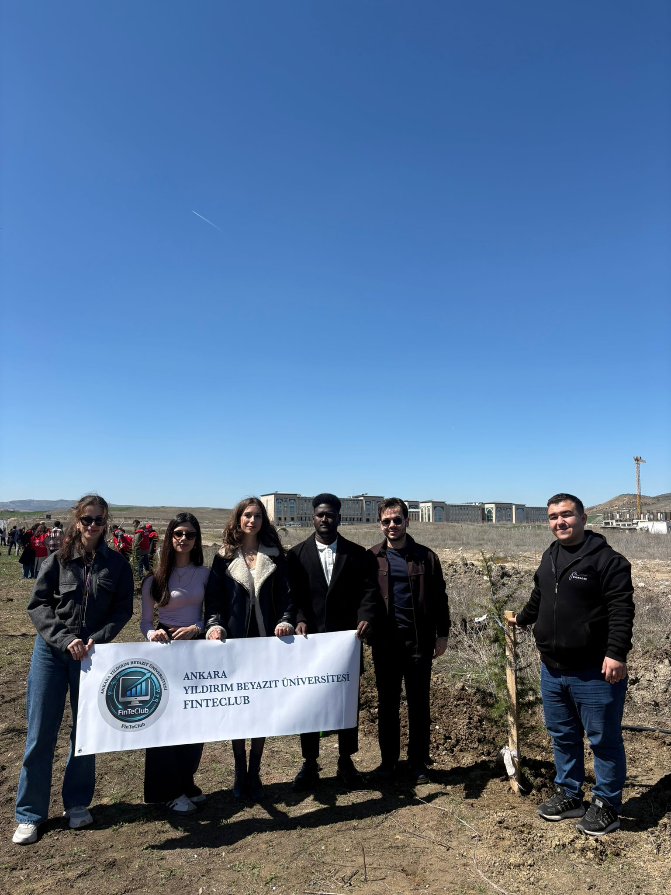

Tanışma Etkinliği
Kulübümüzün yeni üyeleri ile tanışmak için bir tanışma toplantısı düzenledik. Kulübün vizyonu ve misyonu etrafında kenetlenerek güçlü bir döneme harika bir başlangıç yaptık.


Kulübümüzün yeni üyeleri ile tanışmak için bir tanışma toplantısı düzenledik. Kulübün vizyonu ve misyonu etrafında kenetlenerek güçlü bir döneme harika bir başlangıç yaptık.

FinTeClub olarak, yoğun geçen akademik dönemin yorgunluğunu atmak ve kulüp içi bağlarımızı güçlendirmek amacıyla Çubuk Karagöl Tabiat Parkı’nda harika bir sosyal etkinlik düzenledik.
Doğanın ve temiz havanın tadını çıkardığımız bu özel günde, sucuk ekmek partimiz eşliğinde keyifli anlar paylaştık ve gelecek dönem projelerimiz için enerji tazeledik.
Teşekkürlerimizle:
Etkinliğimizin eksiksiz ve keyifli geçmesinde emeği olan paydaşlarımıza teşekkür ederiz. Bu güzel günde bizleri yalnız bırakmayan, varlıklarıyla etkinliğimize değer katan tüm kıymetli hocalarımıza ve kulüp üyelerimize katılımları için; etkinliğimize lezzet katan sponsorluk desteği ve katkıları için Muhammet Kasap'a ve Karagöl’e ulaşımımızı güvenle sağlayarak bu organizasyonu mümkün kılan Çubuk Belediyesine destekleri için FinTeClub yönetimi ve ailesi adına sonsuz teşekkürlerimizi sunarız.
Birlikte üretiyor, birlikte paylaşıyor ve birlikte büyüyoruz! ✨
FinTeClub olarak teknoloji ve finans dünyasının dijital altyapısını yerinde incelemek amacıyla Bilgi Teknolojileri ve İletişim Kurumu'na (BTK) verimli bir teknik gezi düzenledik. Sektör profesyonellerinden aldığımız bilgiler ve kurum içi incelemelerle üyelerimizin vizyonunu genişlettik.




Kampüsümüzde düzenlenen ağaç dikme etkinliğine kulüpçe katılmış, fidanlarımızı geleceğe umut olması için toprakla buluşturmuştuk. 🌱
Etkinlikte bizlerle bir araya gelen, çevreye ve geleceğe yönelik bu adımı destekleyen Değerli Rektörümüz Prof. Dr. Ali Cengiz KÖSEOĞLU ile birlikte kampüsümüzü yeşillendirmenin mutluluğunu yaşadık.
Bu güzel organizasyonda emeği geçen herkese teşekkür ederiz. Bugün diktiğimiz her fidan, yarınlarımızın gölgesi olacak! 💚

